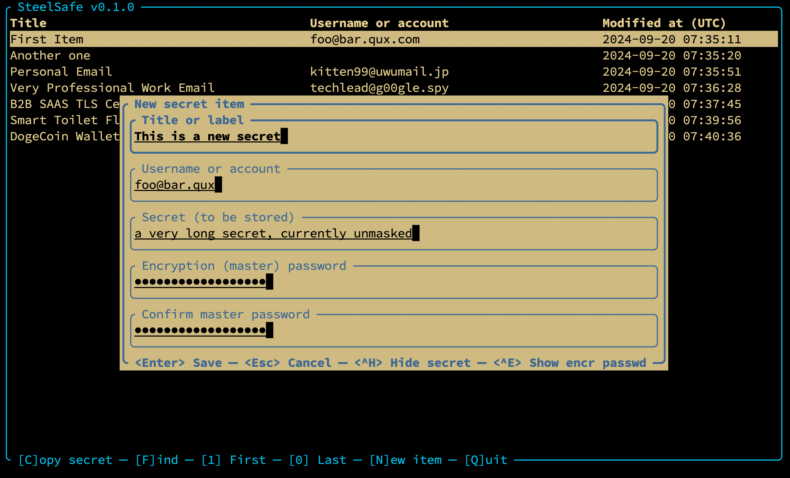

SteelSafe: Personal password manager
SteelSafe is a small, portable, offline, personal password manager written
in 100% safe Rust that I started because I couldn't find anything similar that
would be a perfect fit for my own needs.
Its distinguishing features include:
- A local, easily-accessible, portable password database in SQLite format
- An easy-to-use, slick Terminal User Interface (TUI)
- Adherence to cryptography and software engineering best practices
- Zero-config by default with very few knobs to turn &emdash; no risk of setting weak parameters
- A reasonable threat model and the associated simplicity makes code review easy
To get started, see the official documentation on GitHub.
